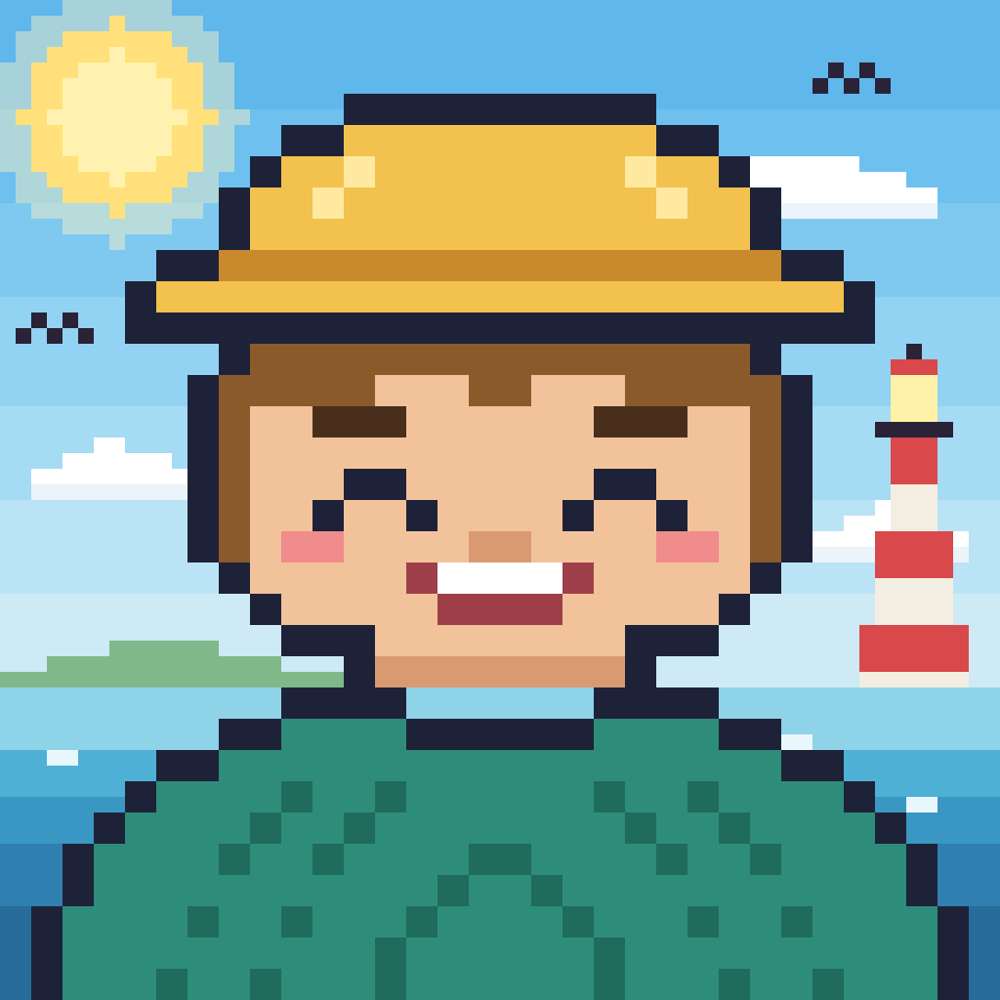

Fishing Town: Gullcape
Balıkçı Kasabası: Martıburnu
Türkçe
Sakin bir pixel art balık tutma oyunu. Gündüz balık tut, akşam tezgâhta pazarlık et, gece tuzak kur, haftada bir tekneyle açığa çık. İki ay boyunca kayıp babanın izini sür.
English
A cozy pixel-art fishing game. Fish by day, haggle at your stall by evening, set traps for the morning and take the boat out once a week. A two-month story of a missing father.